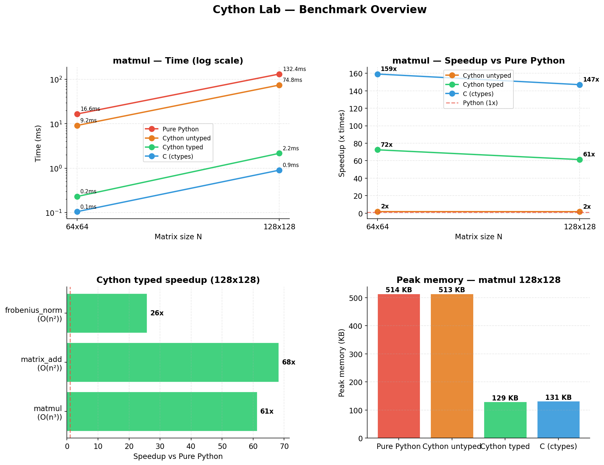
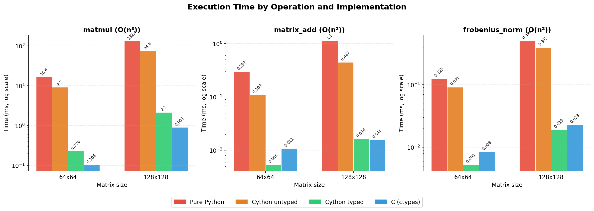
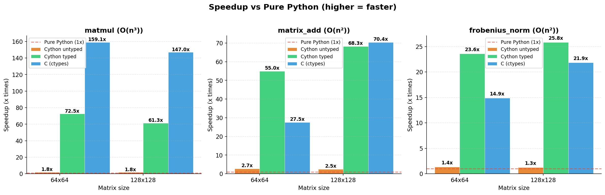
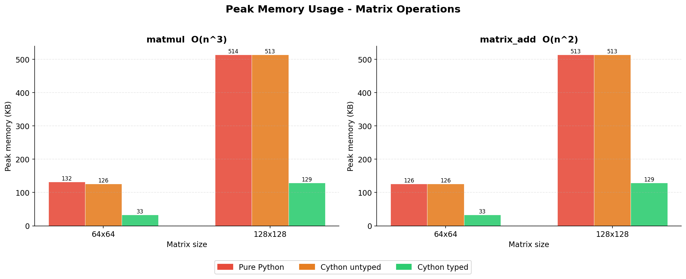

Pure Python vs Cython untyped vs Cython typed | Matrix operations benchmark
PyObject* — boxing overhead remains. Only the interpreter dispatch loop is eliminated.cdef int i, j, p and cdef double s put variables on the C stack. double[:, ::1] typed memoryviews give direct pointer arithmetic. with nogil: releases the GIL. Result: pure C loop with no Python overhead.list of lists stores each float as PyFloatObject (24 bytes). Cython typed uses NumPy arrays — 8 bytes per element. 4x memory savings for 128x128 matrix..c file for typed code is essentially hand-written C. Difference vs pure C is <5%.| Size | Operation | Pure Python | Cython untyped | Cython typed | C (ctypes) | Speedup (untyped) | Speedup (typed) | Speedup (C) | Mem Python | Mem typed | Mem ratio |
|---|---|---|---|---|---|---|---|---|---|---|---|
| 64x64 | matmul (O(n³)) | 16.6 ms | 9.2 ms | 0.229 ms | 0.104 ms | 1.8x | 72.5x | 159.1x | 132 KB | 33 KB | 4.0x |
| 64x64 | matrix_add (O(n²)) | 0.297 ms | 0.109 ms | 5.40 µs | 0.011 ms | 2.7x | 55.0x | 27.5x | 126 KB | 33 KB | 3.9x |
| 64x64 | frobenius_norm (O(n²)) | 0.125 ms | 0.091 ms | 5.30 µs | 8.40 µs | 1.4x | 23.6x | 14.9x | 0 KB | 0 KB | 0.4x |
| 128x128 | matmul (O(n³)) | 132.4 ms | 74.8 ms | 2.2 ms | 0.901 ms | 1.8x | 61.3x | 147.0x | 514 KB | 129 KB | 4.0x |
| 128x128 | matrix_add (O(n²)) | 1.1 ms | 0.447 ms | 0.016 ms | 0.016 ms | 2.5x | 68.3x | 70.4x | 513 KB | 129 KB | 4.0x |
| 128x128 | frobenius_norm (O(n²)) | 0.496 ms | 0.393 ms | 0.019 ms | 0.023 ms | 1.3x | 25.8x | 21.9x | 0 KB | 0 KB | 0.4x |




Run the benchmark runner with Python 3.11 (after building Cython extensions with build.bat):
python benchmarks/bench_runner.py --sizes 64 128 256 --repeats 5 python benchmarks/make_report.py